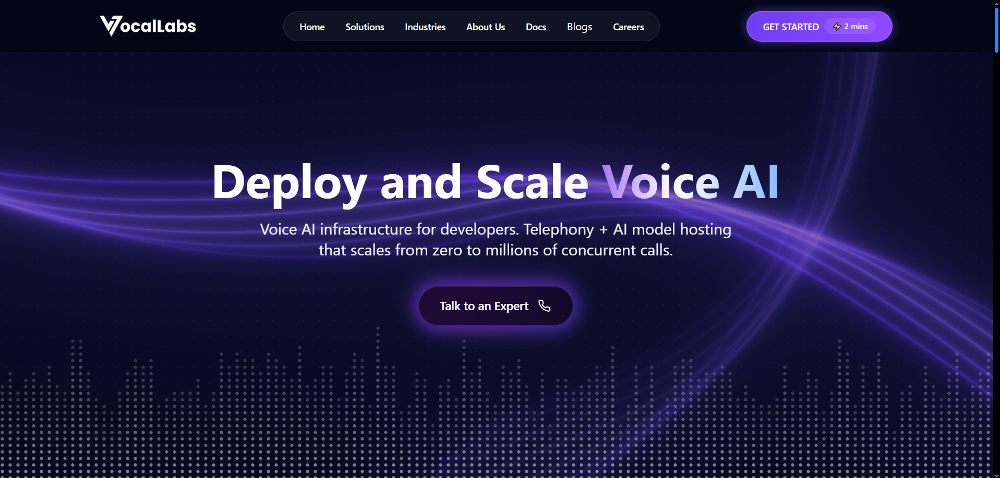
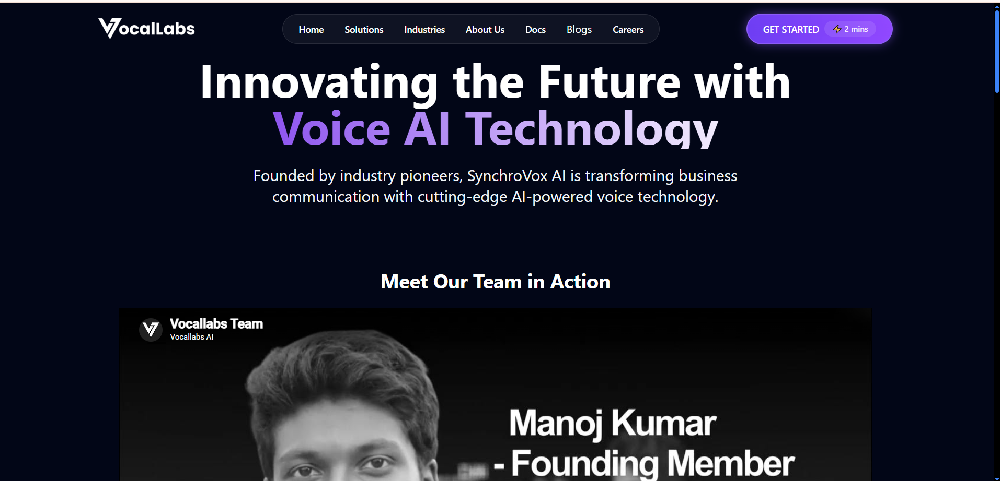
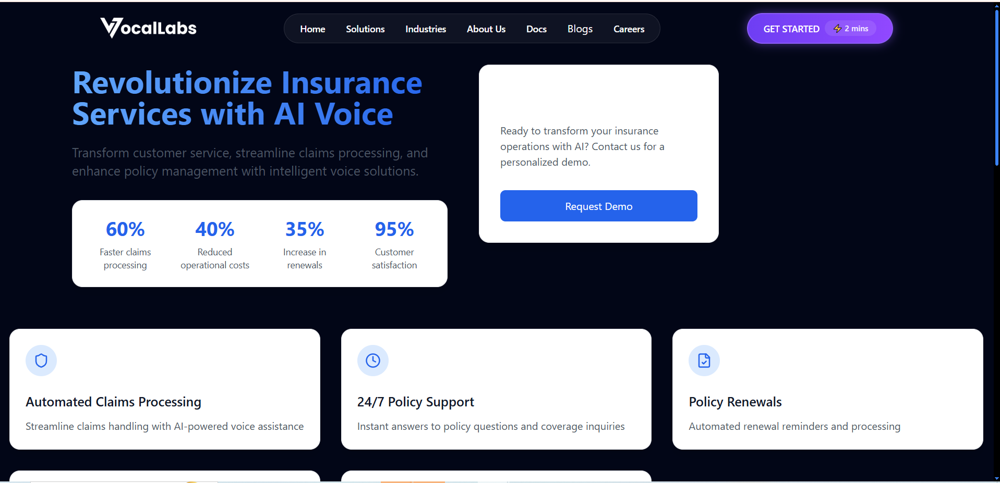
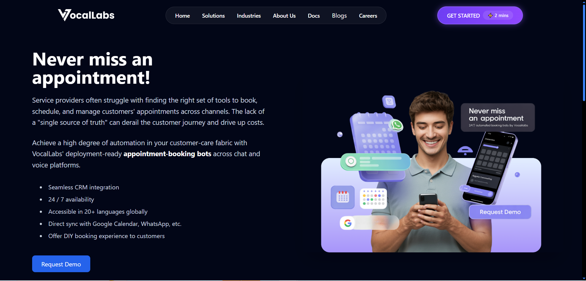
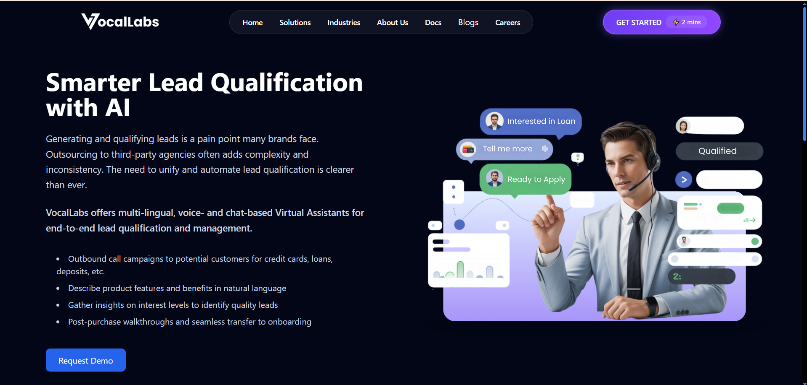
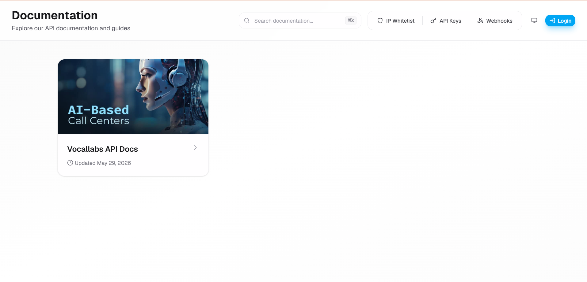

Vocallabs public surface
The site positions Vocallabs around voice AI infrastructure, telephony, model routing, automated testing, global phone numbers, SDKs, webhooks, and low-latency calls.
Chosen company
Five sharp product feedbacks across GTM, competitor positioning, features, UX, and partnerships for an AI voice-agent company selling trust, speed, and workflow execution.
Thesis
Vocallabs.ai has a strong underlying promise: natural voice agents for calls, booking, support, and sales. The product category is crowded and demo-heavy, so the highest-leverage move is to reduce buyer uncertainty: show who it is for, how it performs, what it integrates with, and how a customer can safely test it before putting it on live calls.
What I reviewed
The site positions Vocallabs around voice AI infrastructure, telephony, model routing, automated testing, global phone numbers, SDKs, webhooks, and low-latency calls.
The public app listing describes a communication product combining AI and human agents for call experiences, which makes handoff quality a key user expectation.
Vapi emphasizes developer platform strength. Synthflow highlights enterprise integrations and real-time booking. These competitors make evaluation paths and workflow outcomes more explicit.
Evidence methodology
I reviewed Vocallabs like a prospective buyer and early product operator: first scanning the home page promise, then checking product modules, industry pages, use-case pages, and documentation. I used the screenshots below as evidence for what a visitor can actually observe before speaking to sales.
Screenshot evidence






Competitor comparison
Mockup reference
Book appointments and reduce missed calls by 30%.
Service details, availability rules, pricing boundaries, and FAQs added.
Define when to transfer: payment issue, angry customer, unclear intent, or compliance risk.
Run 10 test calls before launch: reschedule, cancellation, wrong number, silence, and language switch.
Product pillars
Public messaging speaks to multiple audiences at once: developers looking for voice infrastructure, and business teams looking to automate sales, support, and bookings.
A buyer cannot instantly tell whether Vocallabs is best used as developer infrastructure, a self-serve business tool, or a managed automation service. That slows qualification and weakens conversion.
Create ICP-specific entry points: clinics for appointment calls, education for admission follow-ups, real estate for lead qualification, and local services for missed-call recovery. Each page should show one workflow, one ROI model, and one sample call.
Demo-to-qualified-opportunity rate by ICP, plus percentage of visitors who complete a sample-call interaction.
Competitors such as Vapi and Synthflow show clear technical docs, integration breadth, and workflow-specific capabilities like real-time booking and CRM updates.
"Human-like fluency" is valuable, but it is now a category claim. Buyers need proof that Vocallabs wins on Indian languages, local telephony reliability, cost, support, and workflow depth.
Publish a comparison page: Vocallabs vs Vapi vs Synthflow vs Retell. Include Hindi/Hinglish/regional-language handling, barge-in quality, handoff behavior, integrations, uptime, latency ranges, and pricing transparency.
Increase in competitor-page assisted conversions and reduction in sales calls where buyers ask basic differentiation questions.
The product promises scalable telephony, AI stack routing, automated testing, and voice agents for business calls, but the fastest public path appears to be scheduling a demo.
Voice AI is experiential. If users cannot hear latency, interruption handling, fallback behavior, and post-call output, they cannot form trust quickly.
Add a public "Call the Agent Now" sandbox with three templates: book an appointment, qualify a lead, and answer support FAQs. After the call, show transcript, intent, sentiment, extracted fields, and handoff recommendation.
Sandbox completion rate, demo bookings after sandbox use, and call quality rating collected immediately after the test call.
Call-flow builders are powerful, but users are usually anxious before launch because a single wrong answer, awkward pause, or failed handoff can damage customer trust.
Non-technical operators may not know how to define edge cases, escalation rules, restricted answers, CRM fields, or test scenarios. The blank-canvas problem delays activation.
Add a guided launch flow: goal, business policy, knowledge base, allowed actions, forbidden claims, human handoff rule, test-call checklist, and launch confidence score.
Time from signup to first successful test call, number of failed test calls before launch, and percentage of agents launched with handoff rules configured.
Voice agents become operationally valuable when they update calendars, CRMs, WhatsApp, ticketing tools, payment systems, and internal dashboards after the call.
If integrations are not visible, buyers may assume the product is a voice demo rather than an automation layer that completes work.
Launch integration packs: "Lead-to-CRM" for HubSpot/Zoho, "Booking Agent" for Google Calendar/Cal.com, "Call Summary to WhatsApp," and an n8n workflow pack for automation agencies.
Attach rate of integration packs, percentage of calls that complete an external action, and partner-sourced revenue.
Prioritization
Public sandbox with one appointment-booking agent, because it turns the product from a claim into an experience.
ICP-specific landing pages, because they clarify the buyer and make sales qualification sharper.
Integration packs, because workflow execution is what separates a useful voice agent from a demo.
Sources